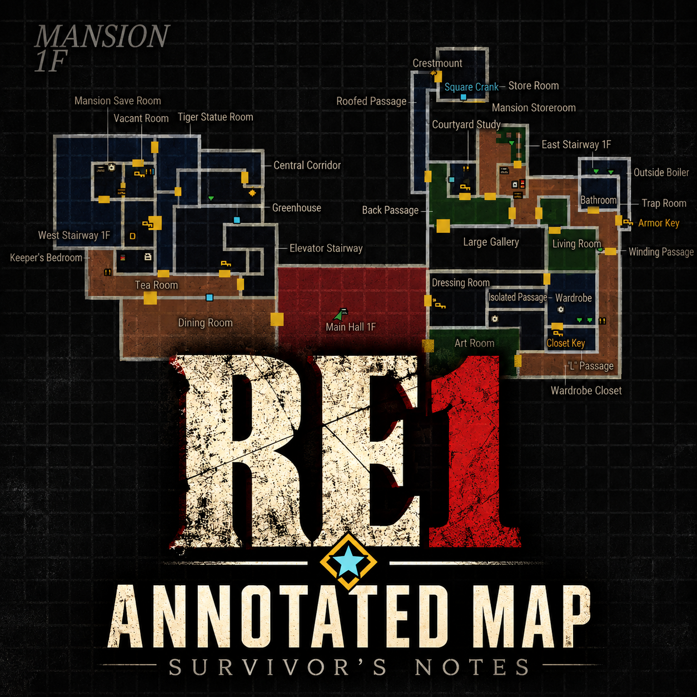
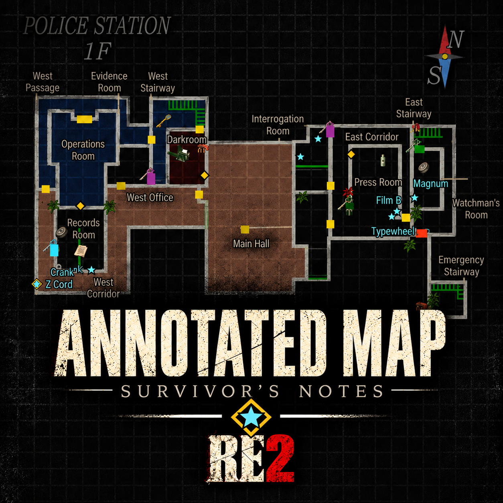
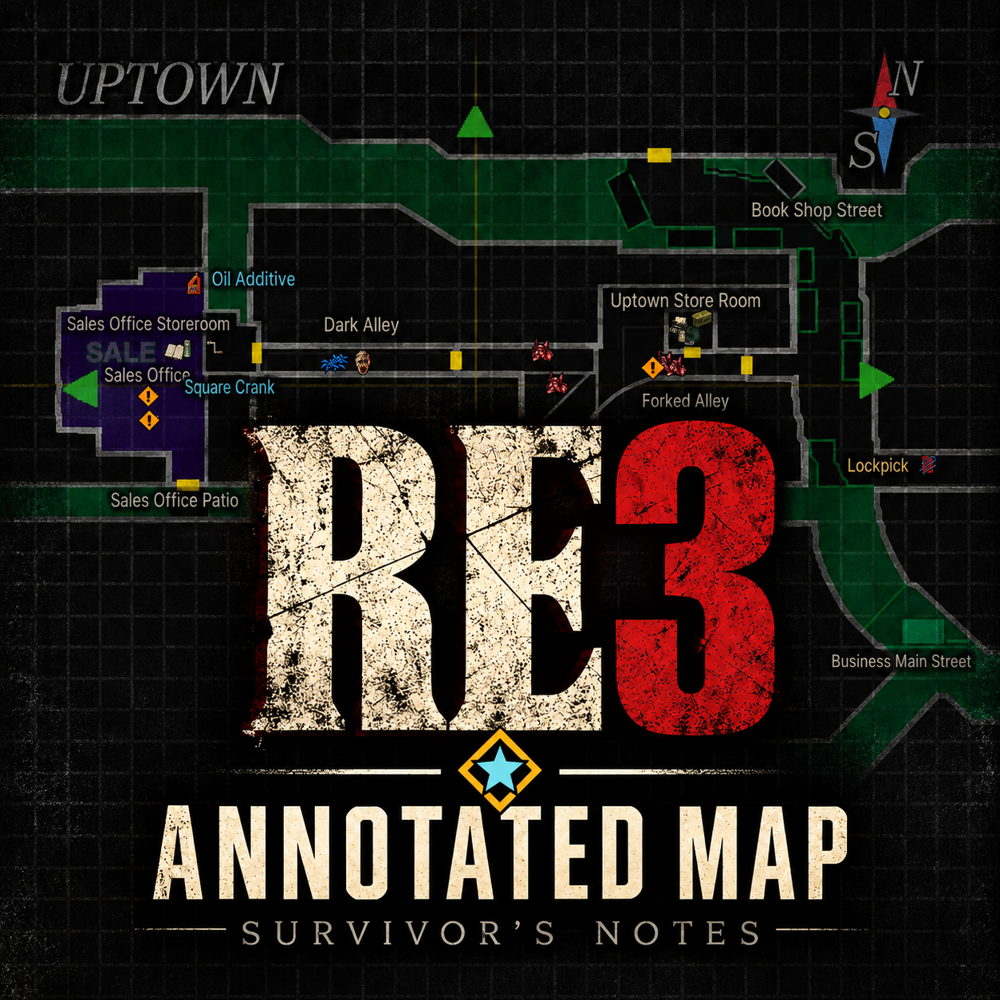

바이오하자드 1 한글 HD 번역
Classic REbirth와 RE:Enhance 환경에서 쓰는 한글 모드입니다. 대사, 메뉴, 아이템, 문서, 영상 자막을 번역했고, 문서는 고해상도로 새로 만들었습니다.
설치 방법 자세히 보기 →
- 게임을 일본어로 설치
GOG는 설치 언어를 일본어로 고릅니다. Steam은 설치 폴더 안의japanese폴더가 게임 폴더입니다. - Classic REbirth 1.1.4 설치
옛 게임을 요즘 PC에서 실행되게 해 주는 무료 프로그램입니다. 배경과 영상까지 고화질로 즐기려면 RE:Enhance를 먼저 설치한 뒤 REbirth를 1.1.4로 올리세요(추천). 1.1.3에서는 영상 한글 자막이 나오지 않습니다. - 한글패치 복사
위 버튼으로 받은 ZIP의 압축을 풀고, 내용물 전체를Biohazard.exe가 있는 폴더에 덮어씁니다. - 설정하고 시작
게임을 실행해 Enable HD loader 켜기, Retro Mode 끄기, Enable Japanese 끄기, Enable movies 켜기로 맞춥니다. MOD SELECTION에서 Resident Evil - Korean HD Translation을 체크합니다.
대사와 메시지
등장인물의 대사와 조사할 때 나오는 메시지를 한국어로 보여 줍니다.
메뉴와 아이템
상태 화면, 설정 메뉴, 아이템 이름과 설명이 한국어로 나옵니다.
문서
게임 속 파일과 일지를 선명한 고화질 한글로 읽습니다.
영상 자막
인트로와 엔딩 영상에 한국어 자막이 나옵니다(REbirth 1.1.4).
바이오하자드 3 한글 HD 번역
Classic REbirth로 실행하는 바이오하자드 3 PC용 한글 모드입니다. 대사, 아이템, 파일 목록, 문서, 상태 화면과 REbirth 메뉴를 한글로 보여 주며, 문서와 화면 글자를 고해상도로 제공합니다.
설치 방법 자세히 보기 →
- 게임과 Enhancement Pack 준비
GOG는 일본어판 게임에 GOG용 Mulderland Enhancement Pack을, Steam은 Steam용 팩을 설치합니다. Graphical improvements는 켜고, 일본어 데이터를 지우는 Free space는 끕니다. - 한글 모드 복사
게임을 종료하고 ZIP 내용물을BIOHAZARD(R) 3 PC.exe와ddraw.dll이 있는 게임 폴더에 덮어씁니다. Steam은 설치 폴더 안의rebirth폴더입니다. - 설정하고 시작
config.ini의[DLL]에서JapaneseEnable = 1을 확인한 뒤, 모드 목록에서 BIOHAZARD 3 - Korean HD를 고릅니다.

바이오하자드 1 상세 지도: 생존자의 메모
공략에 필요한 아이템·열쇠·퍼즐 위치를 지도에서 바로 확인할 수 있는 상세 지도 모드입니다. 어느 문에 어떤 열쇠가 필요한지도 알려 줍니다. 한국어와 영어를 지원합니다.
설치 방법 자세히 보기 →
- 게임 준비
일본어로 설치한 GOG판과 Classic REbirth 1.1.4가 필요합니다. 한글 HD 번역 설치 방법의 1~2단계와 같습니다. - 지도 모드 복사
게임을 종료하고, 위 버튼으로 받은 ZIP의 내용물(dsound.dll,scripts/)을Biohazard.exe가 있는 폴더에 폴더 구조 그대로 복사합니다. ASI 로더가 아닌 다른dsound.dll이 이미 있다면 자세히 보기를 참고하세요. - 지도 열기
게임을 실행하면 자동으로 적용됩니다(MOD SELECTION 체크 불필요). 플레이 중이나 상태 화면 지도에서 Tab(패드 START)으로 전체 화면 지도를 엽니다.
아이템과 퍼즐 위치
열쇠·문서 같은 중요 아이템, 퍼즐, 탄약과 회복 아이템, 타자기 위치를 지도에 표시합니다.
잠긴 문과 열쇠
잠긴 문마다 열 때 필요한 열쇠를 알려 줍니다.
진행 상황 반영
주운 아이템, 연 문, 푼 퍼즐은 지도에서 사라져 남은 일만 보입니다.
전체 화면 지도
플레이 중 Tab(패드 START)으로 큰 지도를 열어 현재 위치와 방향을 확인합니다.

바이오하자드 2 상세 지도: 생존자의 메모
레온·클레어 A/B 시나리오에 맞춰 방 이름, 잠긴 문과 열쇠, 남은 아이템과 퍼즐을 원작 지도에 표시합니다. 한국어·영어를 지원하며 몬스터 표시는 선택해서 켤 수 있습니다.
설치 방법 자세히 보기 →
- 게임과 Classic REbirth 준비
GOG판 바이오하자드 2 (1998)와 Classic REbirth가 필요합니다. 2019년 리메이크용이 아닙니다. - 지도 모드 복사
게임을 종료하고 배포 ZIP의dsound.dll과scripts/를Resident Evil 2.exe가 있는 폴더에 복사합니다. 다른dsound.dll이 있다면 설치 안내를 확인하고, 업데이트할 때는 기존 INI를 보존하세요. - 지도에서 표시 선택
숫자 0–9로 항목·범위·언어를 바꿉니다. 8은 방문한 방 → 공개된 방 → 모든 방, 7은 몬스터 표시입니다. 상태 화면 지도에서는 방향키로 방문한 장소·층을 고릅니다.
빨간 테두리는 몬스터 표시와 방 표시 범위의 범례를 강조합니다.
남은 아이템과 퍼즐
주운 아이템과 완료한 퍼즐은 사라지고, 아이템이 남은 방은 주황색으로 표시합니다.
A/B 시나리오와 재핑
시나리오별 배치를 반영합니다. [Z](스크린샷의 Z)는 재핑 관련 항목을 뜻하며 아이템 이름의 일부가 아닙니다.
선택 가능한 몬스터 표시
몬스터의 출현 지점을 종류별 아이콘으로 표시합니다. 기본값은 끔이며 숫자 7로 켭니다.
표시 범위와 이름 조절
표시 범위와 항목을 골라 보고, 이름 크기와 불투명도를 조절합니다. 모든 방은 미방문 구역도 공개합니다.

바이오하자드 3 상세 지도: 생존자의 메모
원작 바이오하자드 3의 지도에 방 이름과 아이템·열쇠·퍼즐·몬스터 위치를 표시하는 상세 지도 모드입니다. 한국어와 영어를 지원합니다.
설치 방법 자세히 보기 →
- 게임 준비
Steam판 Resident Evil 3 Nemesis(1999)에 Mulderland Steam Enhancement Pack을 설치하고 HD 텍스처를 켭니다. Classic REbirth와 모드 로더가 함께 준비됩니다. 2020년 리메이크용이 아닙니다. - 지도 모드 복사
게임을 종료하고, 위 버튼으로 받은 ZIP의RE3.AnnotatedMap.asi와hires폴더를BIOHAZARD(R) 3 PC.exe가 있는rebirth폴더에 복사합니다. 기존hires폴더와 합치고, 업데이트할 때는 기존 INI를 보존하세요. - 지도에서 표시 선택
게임 안에서 지도를 열면 표시됩니다. 숫자 0–9로 항목·범위·언어를 바꿉니다. 8은 방문한 방 → 공개된 방 → 모든 방, 7은 몬스터 표시입니다.
남은 아이템과 퍼즐
주운 아이템, 열린 문, 완료한 퍼즐과 쓰러뜨린 몬스터는 지도에서 사라집니다.
퍼즐과 Live Selection
주황색 !는 퍼즐, 보라색 ?는 Live Selection(선택 이벤트)의 대략적인 위치입니다. 선택 결과는 알려주지 않습니다.
선택 가능한 몬스터 표시
몬스터와 네메시스를 종류별 아이콘으로 표시합니다. 기본값은 끔이며 숫자 7로 켭니다.
표시 범위와 이름 조절
숫자 8로 방문한 방 → 공개된 방 → 모든 방을 고르고, 이름 크기와 불투명도를 조절합니다. 모든 방은 스포일러를 포함합니다.